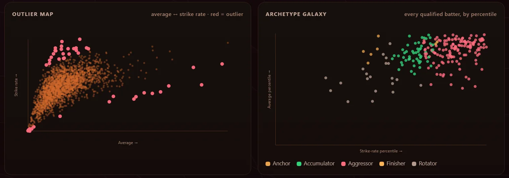

Cricket stats built from ball-by-ball data
Look up a player, compare up to four, or find who sits furthest from the trend. Every number is ranked against the rest of the same competition, from Tests to the IPL.
What it looks like
These are screenshots of the dashboard itself, taken on the Men's T20 Internationals data.



How the numbers are handled
Rate stats need a sample. Averages and strike rates only count once a batter has faced enough balls, and the cutoff is set per competition. That keeps two-ball cameos off the leaderboards.
Overview boards rank by confidence, not the raw number. A player with fewer balls in a given situation is pulled toward the field average, so a small lucky sample can rank below a bigger one with a lower raw number. The figure beside each name is still the raw value.
Percentiles are within a competition. A batter is ranked against the other rated batters in the same competition, not against every cricketer. Era-adjusted indices compare a player with the scoring rate of the seasons they played in.
Archetypes are labels, not grades. Each batter gets one of five tags (Anchor, Rotator, Accumulator, Aggressor, Finisher) based on how they score.
What it misses
Coverage is whatever Cricsheet has. Only matches in that dataset are counted, so career totals can sit below official records. Each competition shows its own date range.
Opposition strength is not adjusted for. Runs against weaker sides count the same as runs against stronger ones.
Live data needs the server. Scores, fixtures and commentary come from Cricbuzz through a small Python server. Open the dashboard as a plain file and those tabs stay empty.
Run it yourself
The dashboard is plain HTML plus pre-built data files, so a clone is enough for everything except live scores. A scheduled job rebuilds those data files from Cricsheet's latest release.
# history works offline git clone https://github.com/HalcyonVector/Cricket-Intelligence-Lab cd Cricket-Intelligence-Lab # then open web/dashboard/index.html in any browser # optional: live scores, and this page served at / pip install requests python serve.py